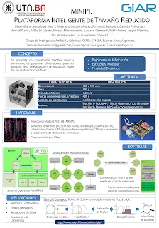
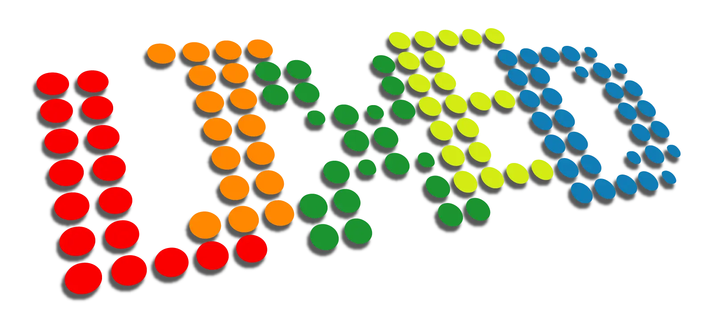

// FORMACIÓN Y DESARROLLO
RPIC 2013 Plataforma Inteligente
Como parte de la XV Reunión de Procesamiento de la Información y Control (RPIC) celebrada en la ciudad de San Carlos de Bariloche, del 16 al 20 de Septiembre 2013, tuvimos al agrado de poder presentar el trabajo con el que venimos trabajando en estos últimos años, junto al equipo de GIAR (Grupo de inteligencia Artificial y Robótica).
4 de octubre de 2013 · 2 minutos de lectura

La presentación se basa en una plataforma robótica móvil, autónoma, inteligente, de múltiple propósito y tamaño reducido, para ser utilizada en investigación y educación. Gracias a sus características:
Características
- Bajo costo.
- Estructura modular.
El sistema está soportado por un microcontrolador LPC2148 (ARM7), el cual permite embeberle un sistema operativo.
Las aplicaciones en la que hemos ensayado la estructura son:
- Robótica colaborativa.
- Fútbol de robots.
- Seguidores de línea.
- Resolución de laberintos.
Para más detalles puedes leer el paper final del proyecto:
Estudios relacionados

Medidor de nivel digital
Indicador de nivel digital. Por medio de un display con un gráfico tipo burbuja indica el ángulo de inclinación y su dirección.
Diciembre 2012
Avance 2,45%
El que aprende y aprende y no practica lo que sabe, es como el que ara y ara y no siembra.
Agosto 2012
Grupo de Inteligencia Artificial y Robótica
GIAR son las siglas de Grupo de Inteligencia Artificial y Robotica, el cuál se formó en 1986 en el ámbito de la Secretaría de Ciencia y Tecnología de la UTN FRBA.
Marzo 2012Medidor de nivel digital
// EL SIGUIENTE PASO
TU PRODUCTO.
SU PRÓXIMA ETAPA.
Una primera conversación para entender el desafío y ver si puedo aportar valor.
↗ Hablemos de tu proyecto